The goal of this assignment is to create a local feature matching algorithm. The pipeline that I used is a simplified version of the famous SIFT pipeline. The matching pipeline is intended to work for instance-level matching; multiple views of the same physical scene. This is really useful in many real world applications. One that I can think of from my field 'Robotics' is that, how do we let the Robot understand how two things in different images relate to each other. Are they the same points on an object? Are they the same structure? And so on. This boils down to saying that this point in one image corresponds to this point in another. And all this is what this project is about.
The SIFT pipeline has three steps. They are:
| 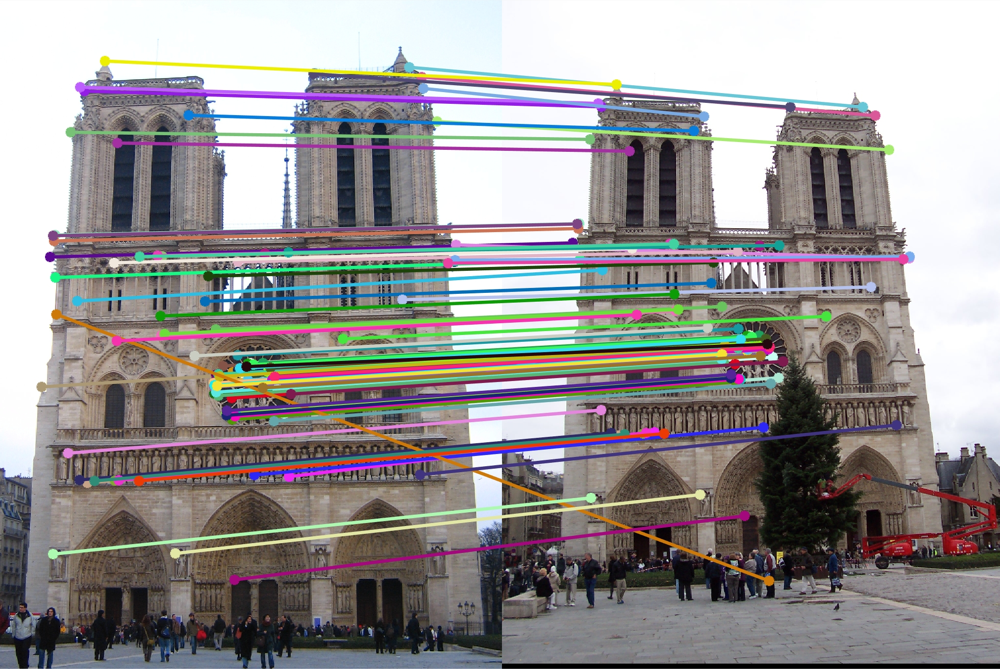 |
| 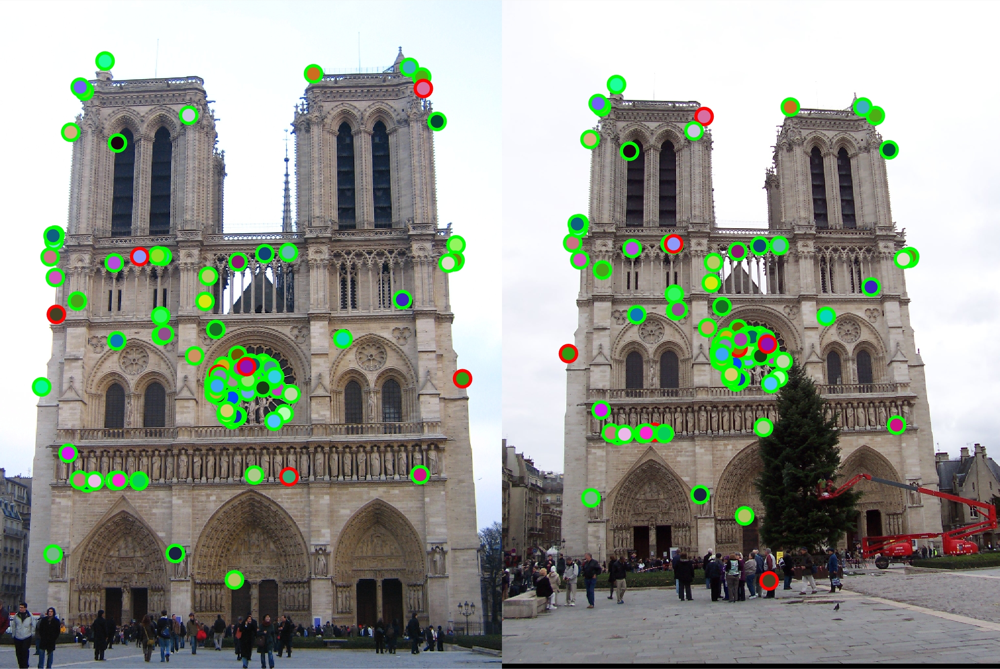 |
The first step in Local Feature Matching is to find objects of interest. We have to get points in the images that we think can be corresponded to points on another image, which we can say with confidence that they are the same. Before figuring out how to let the computer do that, what would we as humans do if we are given deformed images of the same object? The most obvious way is to identify corners n one image and find out where that corner is in the seconf image. This idea seems pretty trivial, but this is what the Harris Corner Detector does. It finds corners in an image. This algorithm takes care of the first step in the three-step SIFT Pipeline; Finding Interest Points. The explanation behind this concept is beautiful, but it boils down to the following few steps.
The Cornerness Function formula is:
%%Assigning Parameters
F_size = 3; %Filter Size
F_cutoff = 1; %Cut-off Frequency
alpha = 0.06;
%Filters
y_sobel = fspecial('sobel'); %Y-Direction Filter
x_sobel = y_sobel'; %XDirection Filter
Ix = imfilter(image, x_sobel); %X-Direction Gradient
Iy = imfilter(image, y_sobel); %Y-Direction Gradient
%%Correctness Function Calculation
Ix2 = Ix.*Ix; %Correctness Function
Iy2 = Iy.*Iy; %Images
IxIy = Ix.*Iy;
Gauss = fspecial('gaussian', F_size, F_cutoff); %Big Gaussian
GIx2 = imfilter(Ix2, Gauss);
GIy2 = imfilter(Iy2, Gauss);
GIxIy2 = imfilter(IxIy, Gauss).^2;
har = GIx2.*GIy2- GIxIy2 - alpha.*(GIx2+GIy2).^2; %Correctness Function
har = har > 0.1; %Threshold
%%Non-Maxima Supppression
cc = bwconncomp(har); %Connected Components
x = [];
y = [];
for i = 1:cc.NumObjects %Non-Maxima Suppression
patch = cc.PixelIdxList{i}; %Indices of Conn. Comp.
max_val = max(har(patch));
for j = 1:size(patch,1) %For each Conn. Component
if har(j) == max_val;
max_index = patch(j); %Find Local Maximum
end
end
[row, col] = size(har);
[a, b] = ind2sub([row col], max_index);
y = [y; a];
x = [x; b];
end
There are a lot of parameters that can be tuned to get the maximum accuracy possible. Here are few of the parameters that I changed in this function to get the 93% accuracy in the Notre Dame Image Pair.
I worked with the original image to get as many points as possible.
The size was 3 and the Cut-Off Frequency was 1. The gaussian removes the high frequency noise and so helps in not detecting noise as a corner.
This parameter changes how many points we detect. Increasing this decreses the number of Connected Components and ultimately the number of Interest Points. Because each image pair was different I had to tune the parameters for all 3. The best was "0.1" for Notre Dame, "0.01" for Rushmore and "0.04" for Episcopal Gaudi.
alpha was chosen as "0.06" for all image pairs.
I changed how close to the boundary we look for the interest points for each image pair. For Notre Dame I took Interest points which were atleast Feature_width away from the boundary. For Rushmore it was atleast 4*Feature_width, and for Episcodal Gaudi it was 7*Feature_width.
Here are some image results.
| 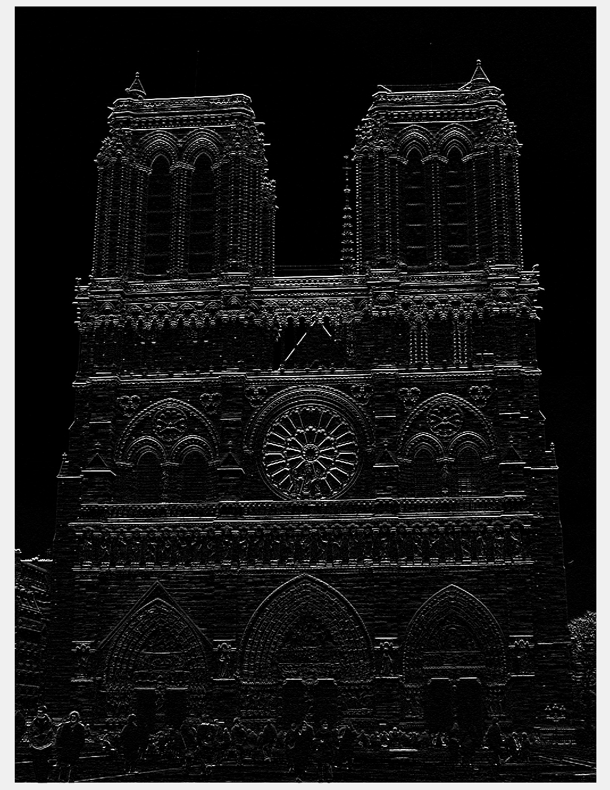 |
| 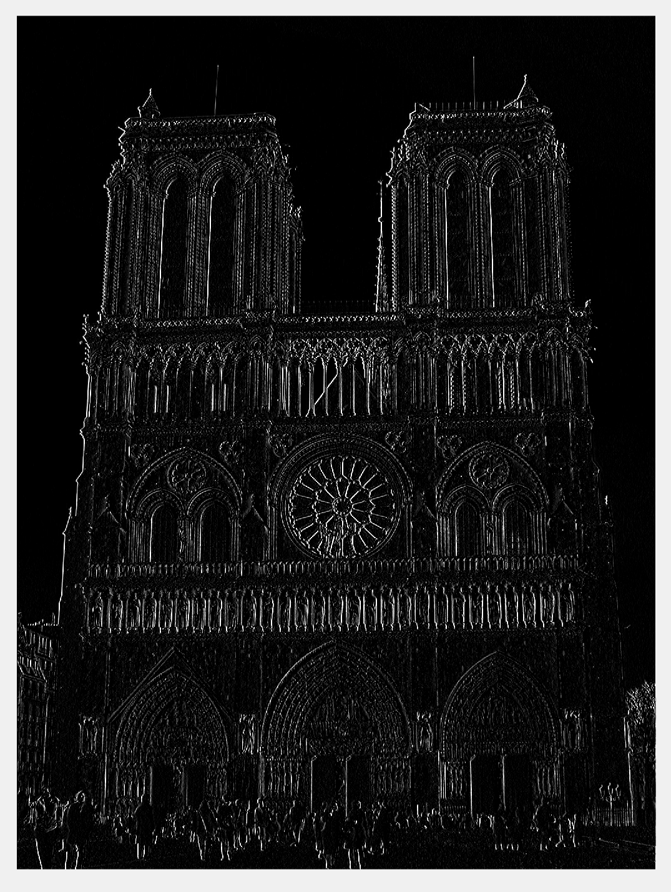 |
| 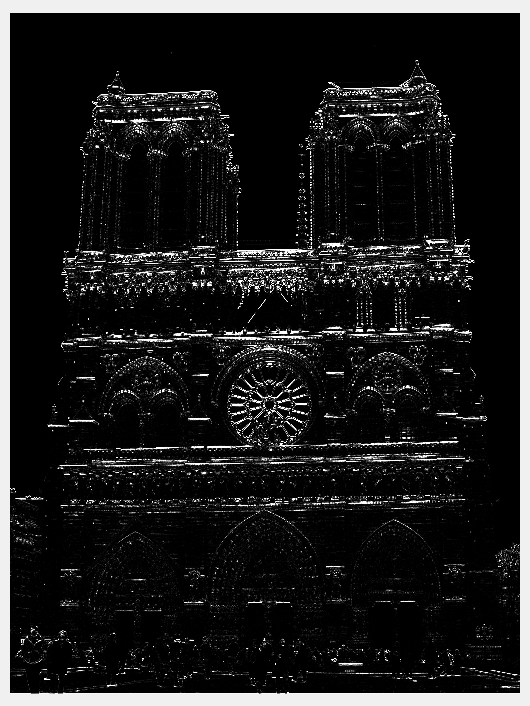 |
| 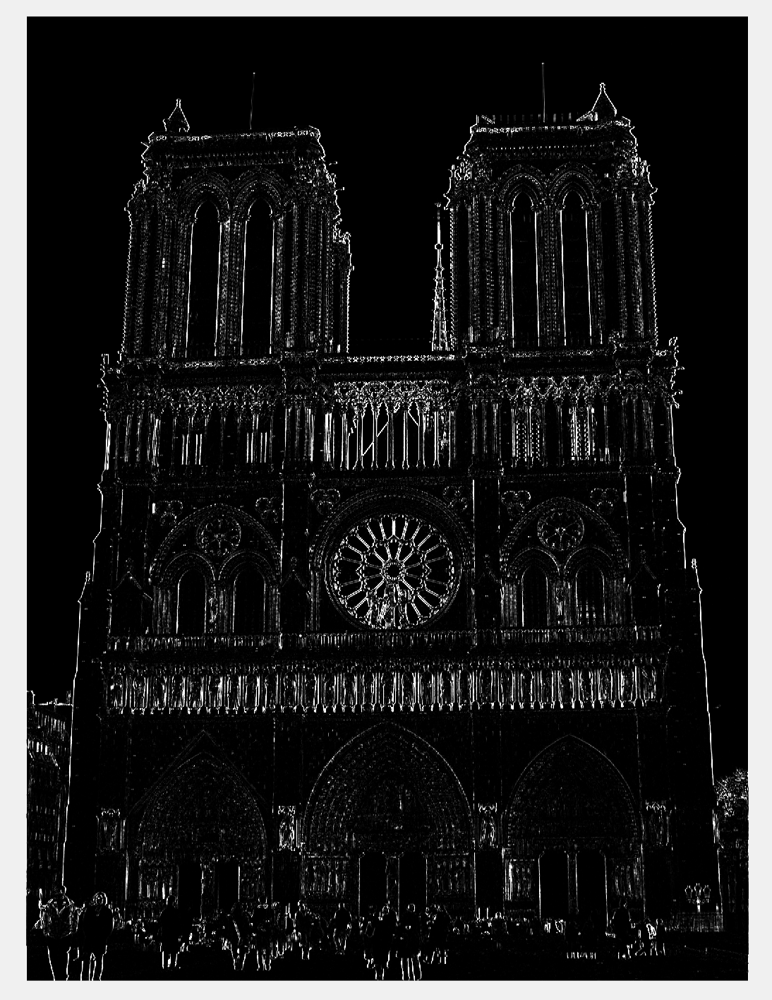 |
| 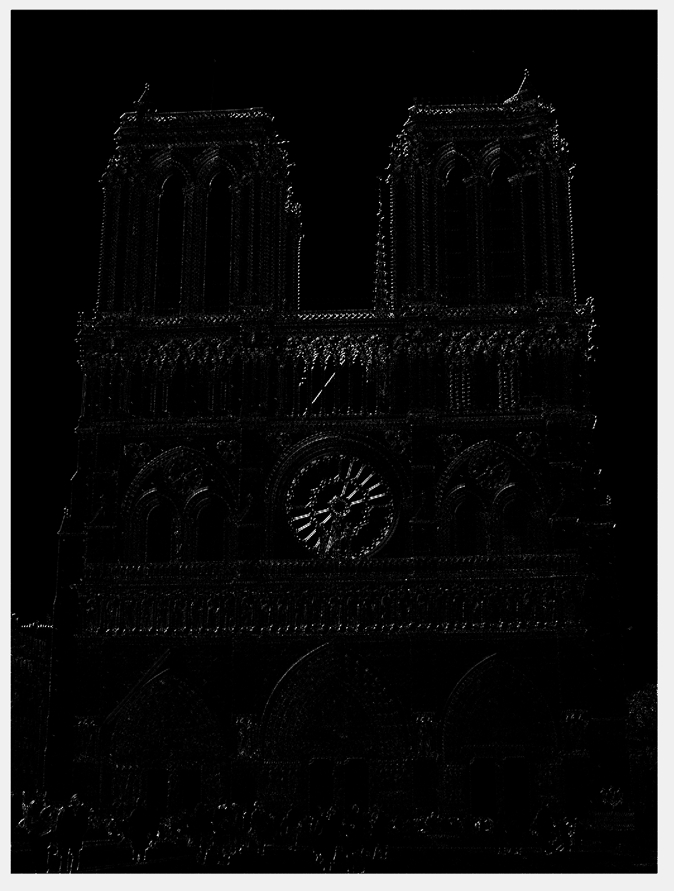 |
| 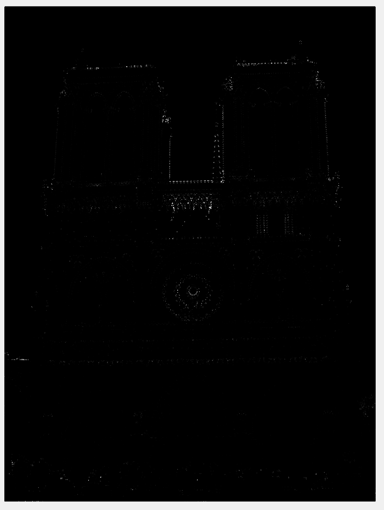 |
| 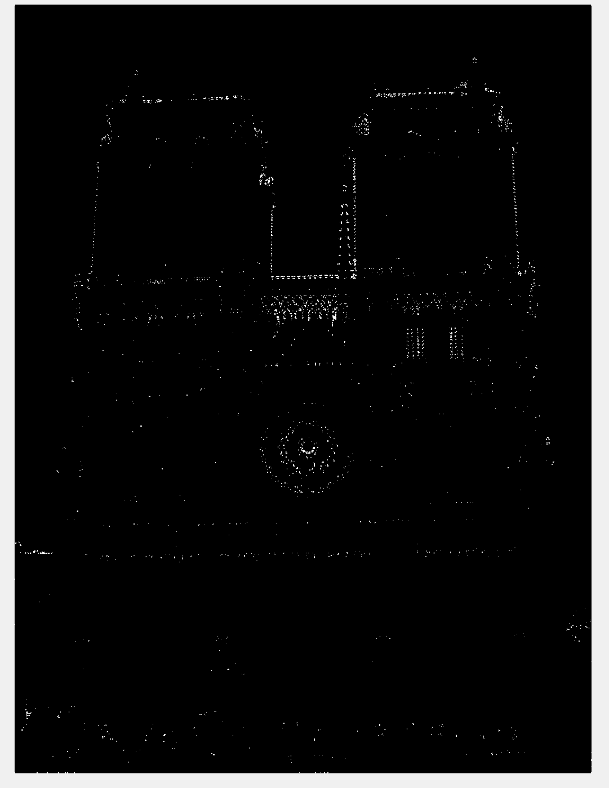 |
The next step in the SIFT pipeline is the Local Feature Descriptor. For each of the interest point we identified, we have to create a Feature Vector. This is done by the following steps:
%%Assignment of Variables
features = zeros(size(x,1), 288); %Feaure Vector.
[Gmag, Gdir] = imgradient(image); %Image Gradient.
[row, col] = size(image);
for i = 1:size(x,1) %For each Interest Point.
f_x = x(i);
f_y = y(i);
feature = [];
for j = (f_y-feature_width/2)+1:feature_width/4:(f_y+feature_width/2) %For each Horizontal Section.
for k = (f_x-feature_width/2)+1:feature_width/4:(f_x+feature_width/2) %For each Vertical Section.
bin = zeros(1,18); %Bins.
for l = 0:(feature_width/4)-1 %For every pixel in
for m = 0:(feature_width/4)-1 %the Section.
mag = Gmag(j+l,k+m); %Gradient Magnitude
dir = Gdir(j+l,k+m)+180; %Gradient Direction (0-360)
if dir > 359.9999
dir = 0;
end
n = floor(dir/20)+1; %Bin number.
bin(n) = bin(n) + mag; %Voting with its Magnitude.
end
end
feature = [feature bin]; %Feature Vector
end
end
features(i,:) = (feature./norm(feature)).^0.5; %All feature Vectors
end
There are a lot of parameters that can be tuned to get the maximum accuracy possible. Here are few of the parameters that I changed in this function to get the 93% accuracy in the Notre Dame Image Pair.
The size was 16 by default. This worked pretty well for the Notre Dame image. For Rushmore I changed it to 24 to get the 30% accuracy, and 16 to get 5% accuracy :(.
This parameter changes how many bins we choose to have in each section of the window. This determines how finely we vote for the gradient directions. I chose 12 bins for all the Image pairs.
The normalized Feature Vectors were raised to some power lesser than 1 to get better results. It was "0.4" for Notre Dame and Rushmore and for Episcodal Gaudi.
The next step in the SIFT pipeline is the Feature Matching. For each of the interest point we identified in one image we have to find the best fit in the secnd image. The steps are as follows:
%%Assigning parameters
matches = zeros(size(features1, 1), 2); %Matches
confidences = zeros(size(features1, 1)); %Confidence
for i = 1:size(features1, 1) %For each Feature in Image 1
dist = zeros(size(features2, 1)); %Distances Vector
for j = 1:size(features2, 1) %For each Feature in Image 2
dist(j) = norm(features1(i,:)-features2(j,:)); %Compute Distances
end
[dist index] = sort(dist); %Sort Distances in ascending Order
confidences(i) = dist(2)/dist(1); %Compute Comfidence
matches(i,:) = [i, index(1)]; %Fix Matches based on Distance
end
% Sort the matches so that the most confident onces are at the top of the
% list. You should probably not delete this, so that the evaluation
% functions can be run on the top matches easily.
[confidences, ind] = sort(confidences, 'descend');
confidences = confidences(1:100);
matches = matches(ind(1:100),:);
There are a lot of parameters that can be tuned to get the maximum accuracy possible. But this function doesn't have any parameter that needs changing.
I did change Parameters of the Feature Descrition function and found the best set of parameters. (3 Marks)
Here are the Three Image Pairs.
| 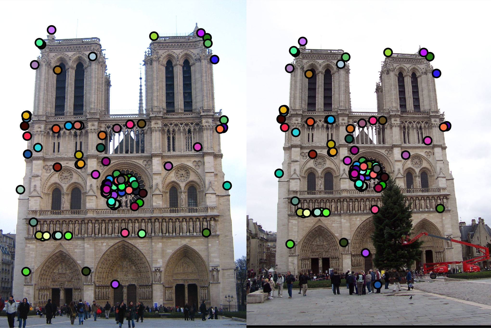 |
| 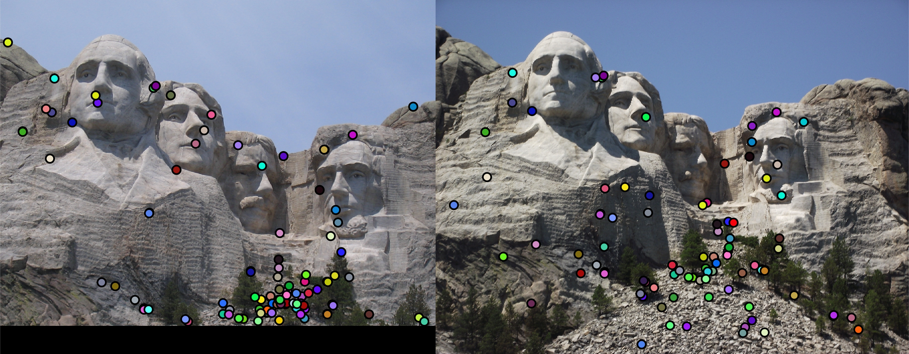 |
| 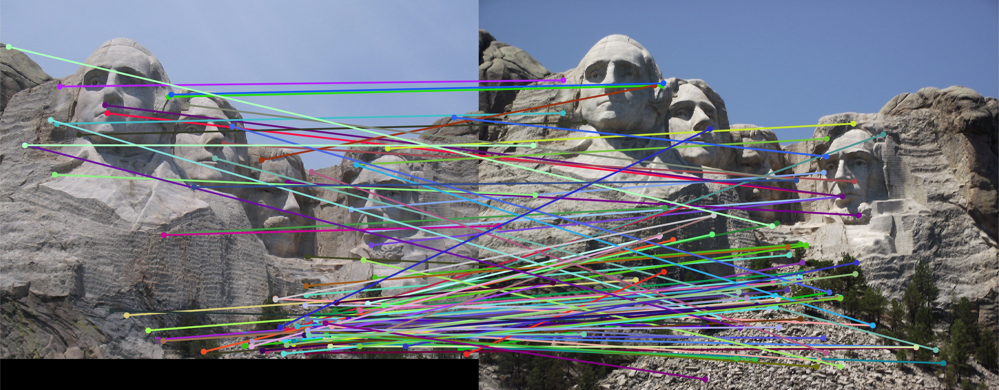 |
| 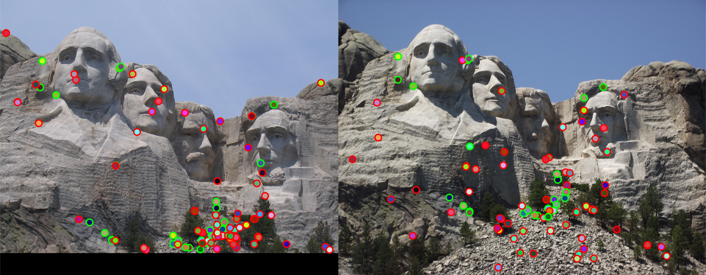 |
| 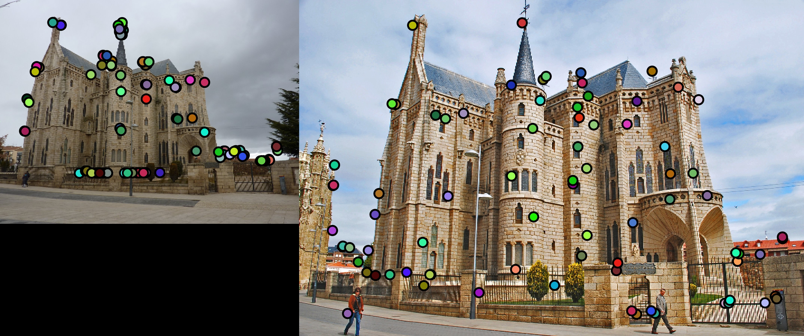 |
| 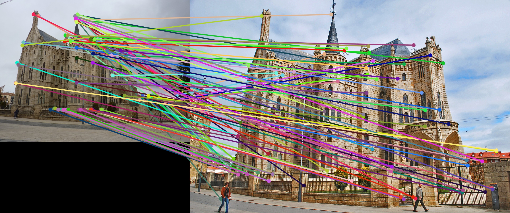 |
| 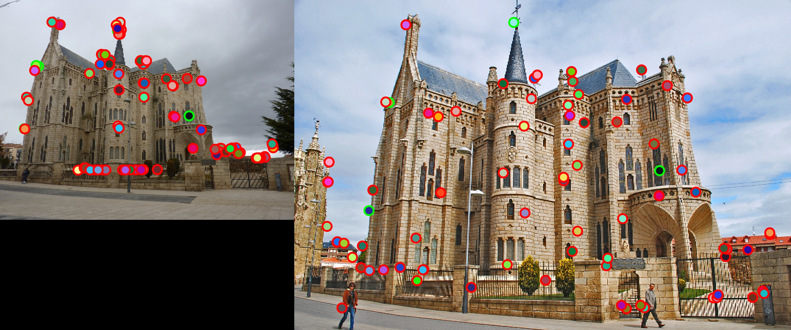 |
The last image accuracy is so bad because they are scaled and from a drastically different viewpoint